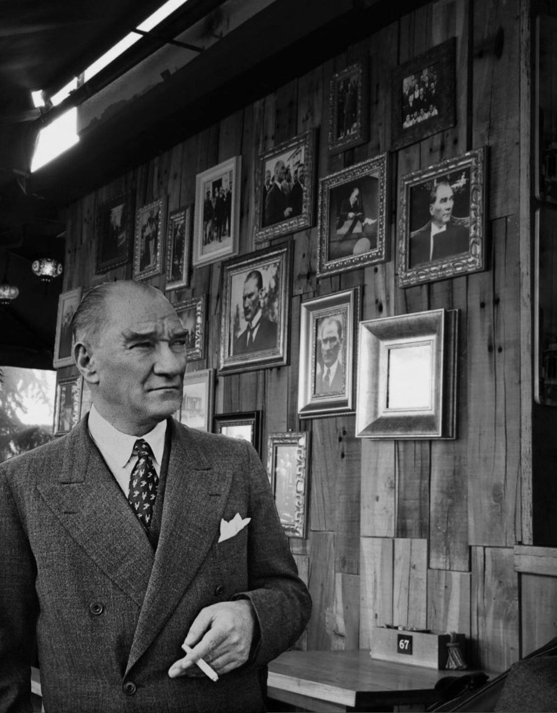
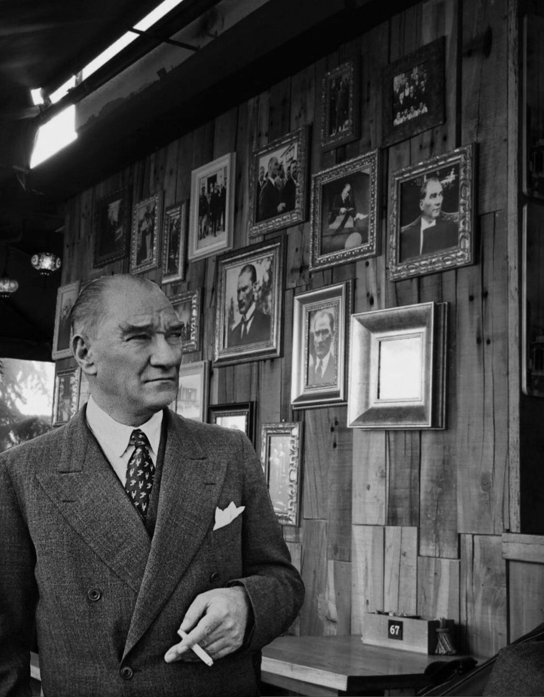

Anıtkabir, Türkiye Cumhuriyeti'nin kurucusu ve ilk Cumhurbaşkanı Mustafa Kemal Atatürk'ün ebedi istirahatgahıdır. Ankara'nın merkezinde yer alan bu anıt mezar, hem mimari güzelliği hem de tarihi önemi ile dikkat çekmektedir. Anıtkabir, Atatürk'ün aziz hatırasını yaşatmak ve gelecek nesillere aktarmak amacıyla inşa edilmiştir.
Mustafa Kemal Atatürk, Türkiye'nin bağımsızlık mücadelesinin lideri ve modern Türkiye'nin mimarı olarak ulusumuzun en önemli figürlerinden biridir. Atatürk, I. Dünya Savaşı sonrasında işgal edilen topraklarımızı kurtararak bağımsız Türkiye Cumhuriyeti'ni kurmuş ve yaptığı reformlarla ülkemizi çağdaş, demokratik ve laik bir yapıya kavuşturmuştur. Onun ileri görüşlü liderliği, Türkiye'yi modern dünyada saygın bir konuma getirmiştir.
Anıtkabir'in yapımına 1944 yılında başlanmış ve 1953 yılında tamamlanmıştır. Anıtkabir, Türk tarihinin ve kültürünün zenginliğini yansıtan öğelerle donatılmıştır. Barış Parkı, Aslanlı Yol, Tören Meydanı ve Mozole gibi bölümleri, ziyaretçilere tarihi ve kültürel bir yolculuk sunmaktadır. Anıtkabir'in mimarisi, Selçuklu ve Osmanlı motiflerini modern çizgilerle birleştiren bir tasarıma sahiptir.
Her yıl milyonlarca ziyaretçi, Atatürk'ün huzuruna çıkarak saygı duruşunda bulunmakta ve onun bıraktığı mirasa olan bağlılıklarını ifade etmektedir. Özellikle 10 Kasım'da, Atatürk'ün ölüm yıl dönümünde, Anıtkabir yoğun ziyaretçi akınına uğramaktadır. Ayrıca, 23 Nisan Ulusal Egemenlik ve Çocuk Bayramı, 19 Mayıs Atatürk'ü Anma, Gençlik ve Spor Bayramı, 30 Ağustos Zafer Bayramı ve 29 Ekim Cumhuriyet Bayramı gibi milli bayramlarda düzenlenen törenlerle de Anıtkabir, ulusal birlik ve beraberliğin simgesi haline gelmektedir.
Anıtkabir'e giriş ücretsizdir ve ziyaret saatleri mevsime göre değişiklik gösterebilmektedir. Ziyaretçiler, Atatürk ve Kurtuluş Savaşı Müzesi'ni gezerek, Milli Mücadele dönemi ve Cumhuriyet'in kuruluş süreci hakkında ayrıntılı bilgi edinebilirler. Müze, Atatürk'ün özel eşyaları, fotoğrafları ve belgeleriyle, o dönemin ruhunu yaşatmaktadır.
Mustafa Kemal Atatürk, sadece Türk milleti için değil, dünya için de önemli bir liderdir. O, barışa olan inancı ve insan haklarına verdiği değer ile evrensel bir figür olmuştur. Atatürk'ün "Yurtta sulh, cihanda sulh" sözü, onun barışa olan bağlılığının en güzel ifadesidir. Anıtkabir, bu büyük liderin anısını yaşatırken, aynı zamanda barış, bağımsızlık ve özgürlüğün simgesi olarak da önemini korumaktadır.
 
